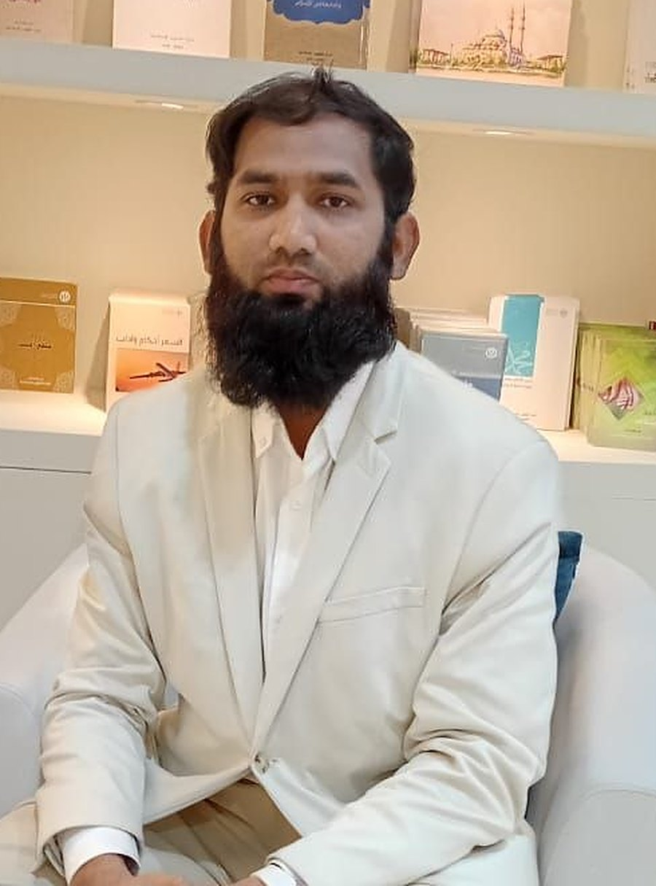
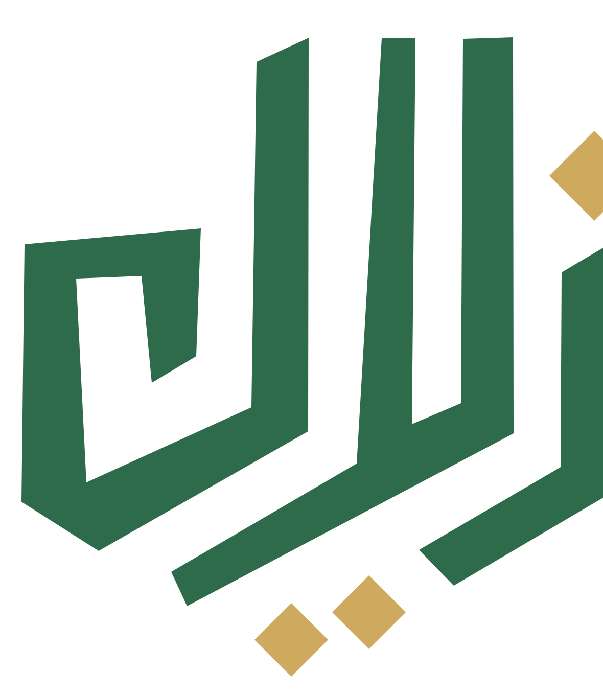

د. ناصر ك.
باحث ومحاضر في اللغة العربية وآدابها، نال الدكتوراه من جامعة كاليكوت عام ٢٠٢٦ بدراسة في التفسير العلمي للآيات الكونية. يكتب في الصحف والمجلات السعودية، ويعمل في الترجمة، وهو مؤسس مشارك ومنسق دولي لأكاديمية الزميل الدولية.

المؤهلات العلمية
الدكتوراه في اللغة العربية وآدابها
«دراسة منهجية للتفسير العلمي للآيات الكونية في تفسير الجواهر للشيخ طنطاوي جوهري»
دبلوم الدراسات العليا في التجارة والإدارة باللغة العربية
التقدير: الدرجة الأولى
الماجستير في اللغة العربية وآدابها
التقدير: A+ (المعدل ٨٫٤١)
البكالوريوس — أفضل العلماء
بنسبة ٩١٪
دبلومات الترجمة
دبلوم مترجم محترف معتمد — UTIA، أبريل–أغسطس ٢٠٢٤ · تقدير ممتاز
دبلوم مترجم محترف معتمد — جمعية ترجمان العرب، ٢٠٢٤–٢٠٢٥ · تقدير ممتاز

أكاديمية الزميل الدولية
أكاديمية دولية للغة العربية، مقرها كاليكوت بالهند، تعمل على نشر اللغة العربية والثقافة العربية بين الناطقين بغيرها، وتبني جسور التعاون مع الجامعات العربية.
نشر اللغة والثقافة العربية
تعريف الناس بالعربية وبثقافتها وحضارتها، داخل الهند وخارجها.
التعاون مع الجامعات العربية
شراكات وندوات مشتركة مع أساتذة وجامعات من الخليج والعالم العربي.
تعليم العربية لغير الناطقين بها
تدريس العربية تدريسًا صحيحًا لمن لغتهم الأم غيرها.
برامج الأكاديمية
ضيوف الأكاديمية
إصدارات الزميل الدولي للنشر
The Bright Future
لكل شيء وقت
The Ship and the Ocean
البحث والمؤتمرات
ثلاث مشاركات بأوراق بحثية في مؤتمر اللسانيات التطبيقية وتعليم اللغات بجامعة زايد، وندوات دولية ينسّقها، وأطروحة دكتوراه نوقشت في جامعة كاليكوت.
مؤتمر ALLT — جامعة زايد
ALLT 2022 — المؤتمر الافتراضي الرابع
ALLT 2023 — المؤتمر الخامس
ALLT 2024 — المؤتمر السادس
بطاقة «Presenter» في المؤتمر الدولي السادس للسانيات التطبيقية وتعليم اللغات، جامعة زايد، دبي.
سلسلة «آفاق اللغة العربية»
سلسلة ندوات دولية عبر الإنترنت ينظمها قسم اللغة العربية بكلية دار العلوم العربية، فازكاد، بالتعاون مع قسم اللغة العربية بجامعة كاليكوت، وينسّقها الدكتور ناصر ك. بمشاركة أساتذة من دول الخليج.
العربية في عصر الذكاء الاصطناعي
الكفاية الثقافية عبر برامج تعلم العربية
تقنيات السرد في الرواية العربية
أطروحة الدكتوراه
«دراسة منهجية للتفسير العلمي للآيات الكونية في تفسير الجواهر للشيخ طنطاوي جوهري».
واقع اللغة العربية في الهند
«منطقة كيرلا أنموذجًا» — محاضرة بدعوة من مركز الأمير عبدالمحسن بن جلوي للبحوث والدراسات الإسلامية، بثٌّ مباشر عبر زووم، فبراير ٢٠٢٦.
التدريس
محاضر زائر في كلية دار العلوم العربية، فازكاد (١٤ يوليو ٢٠٢٥ – ٣١ مارس ٢٠٢٦): درّس أدب التفسير والحديث، والنحو، والبلاغة، والكتابة الإبداعية على مستوى الدرجة الجامعية، وأرشد طلبة السنة الأولى، وأشرف على خمسة مشاريع تخرج في اللغة العربية والترجمة.
الصحافة والإعلام
كاتب رأي في الصحف والمجلات العربية، وضيف على الإذاعة، ومحل تغطية صحفية لأطروحته. وهذه نماذج مما نُشر.
ضيف برنامج «الإيوان» على إذاعة الرياض
استضافته إذاعة الرياض كاتبًا وباحثًا أكاديميًا للحديث عن جهود المملكة العربية السعودية في نشر ثقافة اللغة العربية لغير الناطقين بها حول العالم. مدة الحلقة نحو ست دقائق.
مناقشة الدكتوراه في الصحافة
نشر موقع «صدى نيوز» خبر مناقشة أطروحته في جامعة كاليكوت حول التفسير العلمي للآيات الكونية، مع صورة من قاعة المناقشة.
مقالات وتقارير
إضاءات قرآنية على مفهوم التعلم الذاتي
الارتباط العربي بكيرلا.. الماضي والحاضر
السياحة في كيرلا مع حلول إجازة الصيف
البلد الأمين
كيرلا وجهة العرب للعلاج الطبيعي
تقرير ثقافي عن علماء كيرلا
شكر وتقدير
خطاب من رئيس تحرير صحيفة «آخر الأخبار» (١٤٤٧/٠٢/٢٧هـ) يشكر فيه الأستاذ أبا حماد الأنصاري على مقالاته وإسهامه في خدمة الكلمة الصادقة.
العضويات
ثلاث عضويات مهنية في اتحادات ومنتديات لغوية وأدبية.
الاتحاد الدولي للغة العربية
الاتحاد الدولي للغات والترجمة (IULT)
الملتقى العربي للأدباء
معرض الشهادات
خطابات التوصية
أ.د. عبد المجيد إي — قسم اللغة العربية، جامعة كاليكوت
باحثًا متميزًا ومربيًا مخلصًا، يحمل شغفًا عميقًا بخدمة اللغة العربية وآدابها، ونجح في تقديم دورات وبرامج تدريبية في اللغة العربية.
د. عبد السلام آي بي — مدير كلية دار العلوم العربية، فازكاد
محاضر زائر من ١٤ يوليو ٢٠٢٥ إلى ٣١ مارس ٢٠٢٦، ونسّق سلسلة ندوات دولية عن اللغة العربية وثقافتها بمشاركة أساتذة من دول الخليج.
تواصل
للتعاون الأكاديمي والمحاضرات والكتابة والترجمة.